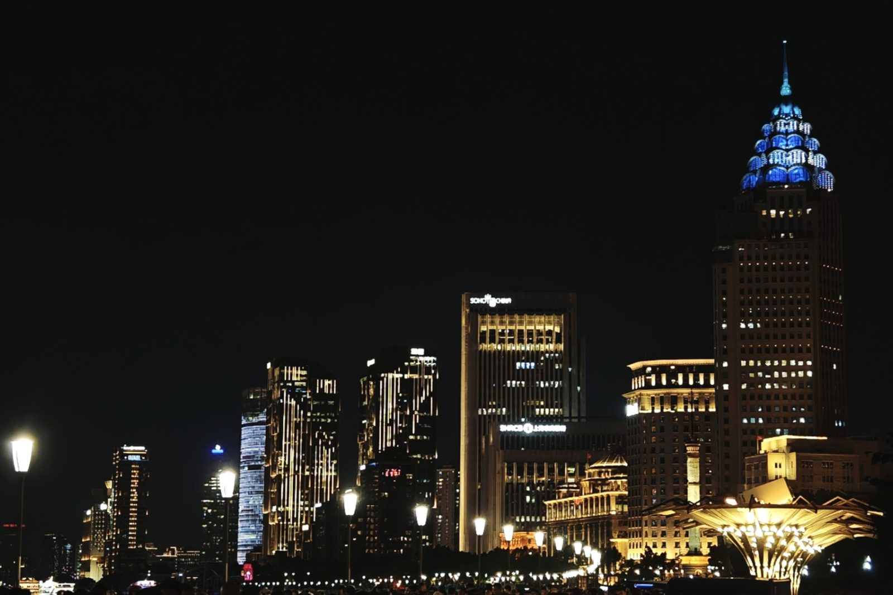

PHOTOS · 摄影
夜行 · 灯河

这张是加班到九点多，过路口时随手拍的。没带三脚架，就把相机搁在桥栏杆上，快门放慢到两秒——于是车灯拉成了一条河，红的是刹车，白的是远光，从脚底下一直流到天边。
白天这座城市是堵的、吵的、让人烦躁的。可到了夜里，灯亮起来，那些白天觉得难看的楼、烦人的车，忽然都变成了发光的东西。人很奇怪，同样是这些车，堵在路上时想骂街，看成灯河时又觉得好看。
那栋尖顶蓝灯的楼我认不全名字，可每天夜里它都亮着，像一根立在城市里的荧光笔。拍完这张我就走回家了，一路都在想：所谓夜归人，大概就是看够了灯，还想再看一眼的人。
完